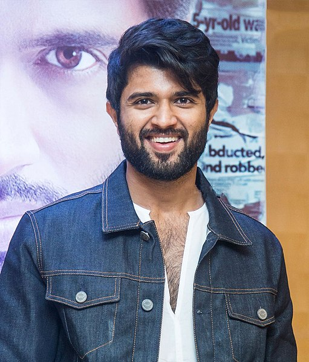

Shah Rukh Khan, also known by the initialism SRK, is an Indian actor and film producer who works in Hindi films. Referred to in the media as the "Baadshah of Bollywood" and "King Khan", he has appeared in more than 90 films, and earned numerous accolades, including 14 Filmfare Awards. Wikipedia

Uppalapati Venkata Suryanarayana Prabhas Raju ([pɾabʱaːs] born 23 October 1979) is an Indian actor who predominantly works in Telugu language films.[4] One of the highest-paid actors in Indian cinema,[5] Prabhas has featured in Forbes India's Celebrity 100 list since 2015[6][7][8] and has received seven Filmfare Awards nominations, a Nandi Award, and a SIIMA Award.

Allu Arjun (born 8 April 1982) is an Indian actor known for his works mainly in Telugu cinema. One of the highest paid actors in India,[3] Allu Arjun is also known for his dancing skills.[4] He is a recipient of several awards including a National Film Award, six Filmfare Awards and three Nandi Awards.[5] He has appeared in Forbes India's Celebrity 100 list since 2014.[6] He is popularly referred to as "Stylish Star".

Ghattamaneni Mahesh Babu (born 9 August 1975) is an Indian actor, producer, media personality, and philanthropist who works mainly in Telugu cinema. He has appeared in more than 25 films, and won several accolades including, Nine Nandi Awards, five Filmfare Telugu Awards, four SIIMA Awards, three CineMAA Awards, and one IIFA Utsavam Award. One of the highest-paid Telugu film actors,[1] he also owns the production house G. Mahesh Babu Entertainment.

Deverakonda Vijay Sai (born 9 May 1989), professionally known as Vijay Deverakonda,[1] is an Indian actor and film producer who works predominantly in Telugu films.[2][3] One of the highest-paid actors of Telugu cinema, he has featured in Forbes India's Celebrity 100 list since 2018 and has received several accolades, including a Filmfare Award, a Nandi Award, and a SIIMA Award.[4]
img src="https://upload.wikimedia.org/wikipedia/commons/9/9a/Mahesh_Babu_in_Spyder_%28cropped%29.jpg" alt="mahesh babu" width="100px" height="100px" />